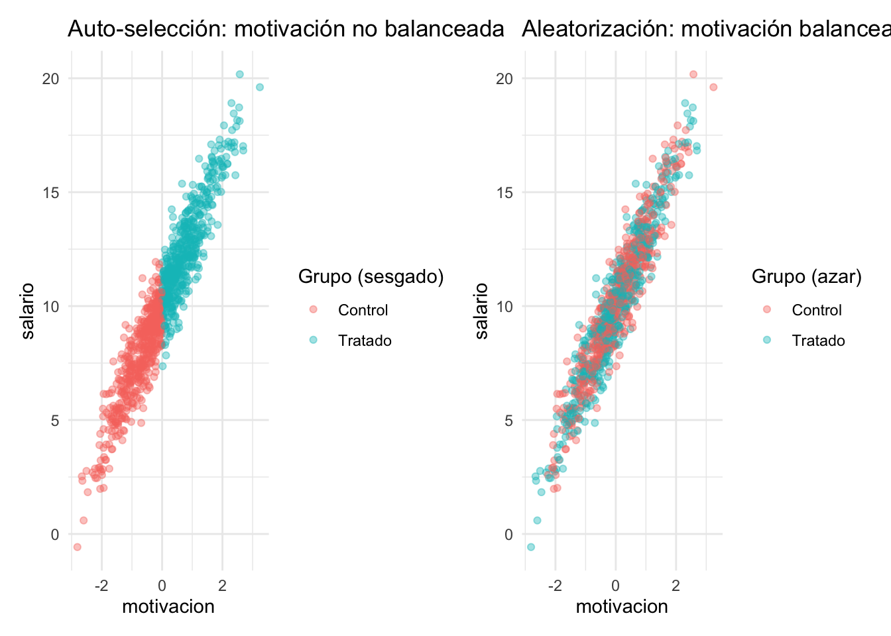
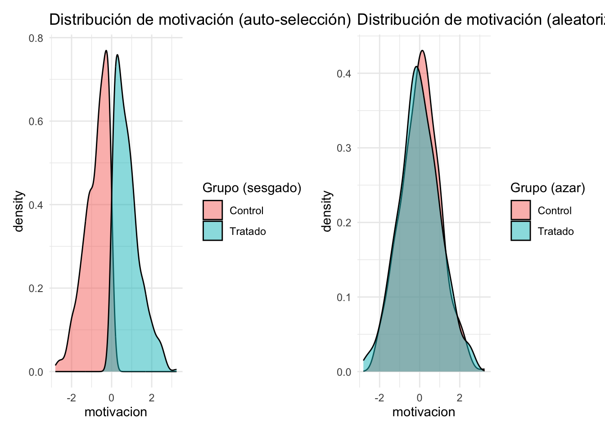

Capitulo 5 ¿Por qué la asignación aleatoria elimina el sesgo?
🎯 Objetivo del capítulo
- ✔️ Entender qué se debe cumplir para que un experimento sea exitoso y reduzca el sesgo de selección
- ✔️ Conocer las diferentes formas de realizar asignación aleatoria
- ✔️ Traducir los resultados potenciales a una regresión lineal
📚 Lecturas
- 📄 Paper Alert: When Should You Adjust Standard Errors for Clustering? (NBER)
- 📄 Teoría: Lectura 4. Capítulo 4 Bernal y Peña (PDF)
Tenemos el siguiente modelo de regresión lineal:
\[ Y = \alpha + \tau D + \varepsilon \]
Donde:
- \(Y\) es el resultado (por ejemplo, salario),
- \(D\) es una variable binaria de tratamiento,
- \(\varepsilon\) incluye motivación, que no observamos.
Supongamos que la verdadera relación es:
\[ Y = \alpha + \tau D + \gamma M + u \]
Donde:
- \(M\) es motivación (no observable),
- \(u\) es un nuevo error sin correlación con \(D\),
- Pero no incluimos \(M\) en la estimación → queda absorbido en \(\varepsilon = \gamma M + u\)
El modelo estimado es:
\[ Y = \alpha + \tau D + \varepsilon \quad \text{con} \quad \varepsilon = \gamma M + u \]
Recordemos que el estimador de mínimos cuadrados ordinarios es:
\[ \hat{\beta} = (X'X)^{-1} X'Y \]
Con \(X = [\mathbf{1}, D]\), tenemos:
\[ \hat{\beta} = \begin{bmatrix} \hat{\alpha} \\ \hat{\tau} \end{bmatrix} = \left( \begin{bmatrix} 1 & D_1 \\ \vdots & \vdots \\ 1 & D_n \\ \end{bmatrix}' \begin{bmatrix} 1 & D_1 \\ \vdots & \vdots \\ 1 & D_n \\ \end{bmatrix} \right)^{-1} \begin{bmatrix} 1 & D_1 \\ \vdots & \vdots \\ 1 & D_n \\ \end{bmatrix}' Y \]
Queremos analizar el sesgo en \(\hat{\tau}\). Sustituyendo \(Y = \alpha + \tau D + \gamma M + u\)
Entonces:
\[ \hat{\tau} = \tau + \gamma \cdot \frac{\text{Cov}(D, M)}{\text{Var}(D)} \]
Interpretación
- Si \(\text{Cov}(D, M) \neq 0\), es decir, si el tratamiento está correlacionado con la motivación, el estimador de \(\tau\) estará sesgado.
- El sesgo es proporcional a:
- El efecto de la motivación sobre \(Y\): \(\gamma\)
- La correlación entre \(D\) y \(M\): \(\text{Cov}(D, M)\)
Resumen del sesgo
| Correlación entre \(D\) y \(M\) | Efecto de \(M\) sobre \(Y\) (\(\gamma\)) | ¿Hay sesgo en \(\hat{\tau}\)? | Dirección esperada del sesgo |
|---|---|---|---|
| Cero | Cualquiera | ❌ No | – |
| Positiva | Positiva | ✅ Sí | \(\hat{\tau} > \tau\) (sesgo hacia arriba) |
| Positiva | Negativa | ✅ Sí | \(\hat{\tau} < \tau\) (sesgo hacia abajo) |
| Negativa | Positiva | ✅ Sí | \(\hat{\tau} < \tau\) (sesgo hacia abajo) |
| Negativa | Negativa | ✅ Sí | \(\hat{\tau} > \tau\) (sesgo hacia arriba) |
Lectura de la tabla:
- Si el tratamiento está correlacionado positivamente con la motivación y la motivación aumenta el resultado, el estimador de \(\tau\) estará sesgado hacia arriba.
- Si la motivación está omitida y además está correlacionada con el tratamiento, siempre hay sesgo.
- Solo si la motivación no está correlacionada con el tratamiento, aunque no la observemos, no hay sesgo.
¿Qué hace la aleatorización?
📌 La aleatorización garantiza \(\text{Cov}(D, M) = 0\), eliminando el sesgo de selección sin necesidad de observar \(M\).
Visualización: motivación, selección y aleatorización

Densidad de la motivación por grupo

Por lo tanto ya no es necesario observar la motivación, ya que la aleatorización garantiza que los grupos sean comparables. Y la estimación de \(\tau\) será insesgada y consistente en la siguiente regresión:
\[ Y = \alpha + \tau D + u \]
- Cual es el valor de \(\alpha\) y \(\tau\) en este caso?
- ¿Por qué se incluyen controles en el análisis de RCT?
- ¿Qué pasa si no se incluyen?
- ¿Calcule los errores estándar?
🛠️ 💬 PROMPT DE CHATGPT PARA REFLEXIÓN PROFUNDA
Instrucciones: Copia este mensaje en ChatGPT o la IA de tu preferencia. Tu objetivo no es obtener respuestas, sino reflexionar guiado por preguntas.
Hola. Actúa como mi tutor metodológico. No quiero que me des respuestas. Quiero que me ayudes a pensar como si estuviéramos en una tutoría.
Estoy estudiando diseños experimentales. Entiendo que si el tratamiento se asigna aleatoriamente, entonces \(\text{Cov}(D, X) = 0\), incluso para variables no observables.
Pero sigo viendo que en muchos papers experimentales incluyen controles en la regresión. Ayúdame a pensar paso a paso si eso es necesario o no.
Por favor, hazme preguntas como:
- ¿Qué gana o pierde la estimación si incluyo controles?
- ¿Qué pasa si hay desequilibrios por azar?
- ¿Qué efecto tiene sobre la precisión del estimador?
- ¿Los controles ayudan a mejorar algo aunque \(\hat{\tau}\) ya sea insesgado?
- ¿Hay casos en que incluir controles puede ser problemático?
⚠️ No me des respuestas. Solo nuevas preguntas que me ayuden a entender mejor este punto.